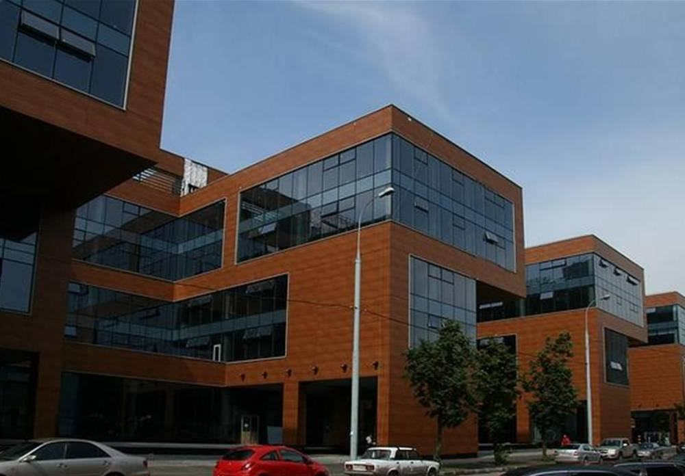
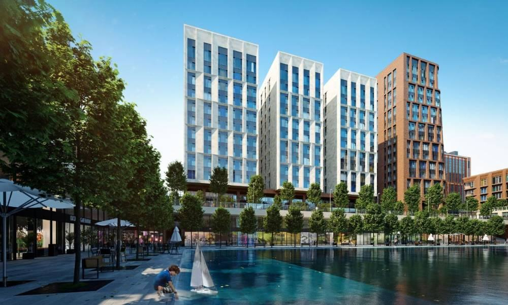
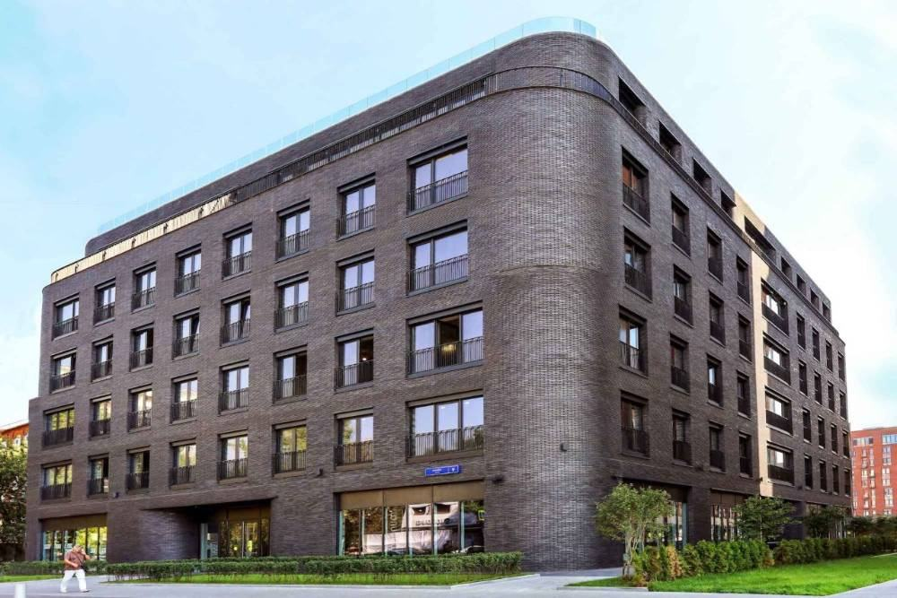
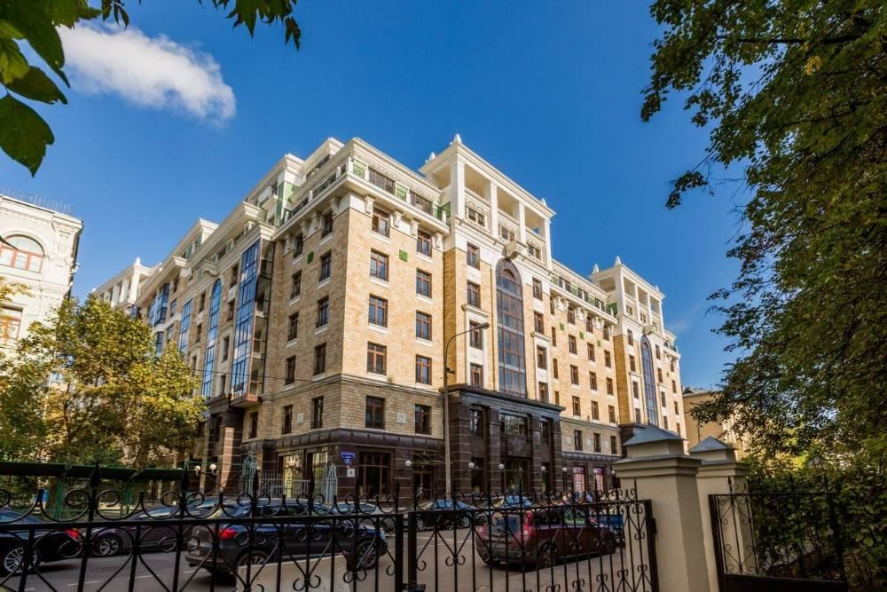
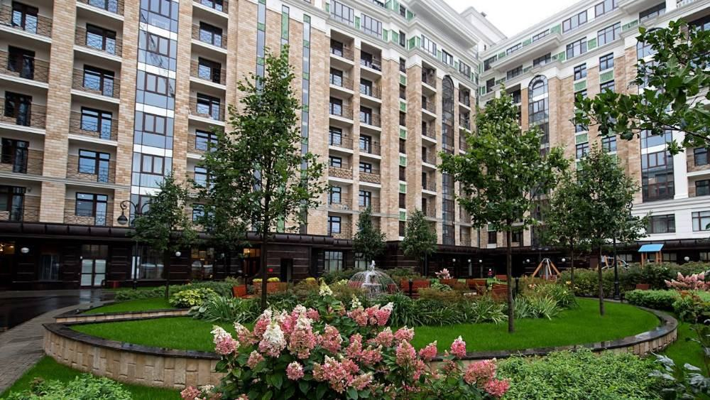
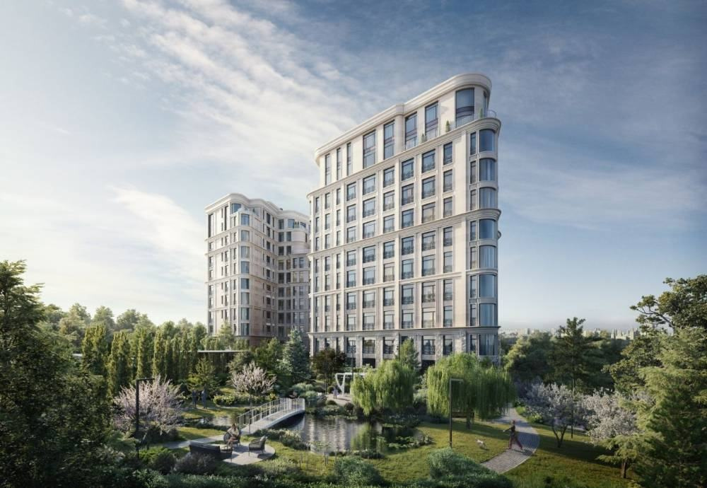

Разборы / Срок годности дома
Разбор · сверка 3 октября 2026
Срок годности дома
На заметку: новый дом держит цену, пока считается почти новым, — лет семь-десять. Потом ему приходится конкурировать с новым домом через улицу, и он проигрывает в том, что ремонтом не исправить: потолки, число соседей, машиноместа, планировки. За десять лет элитная вторичка Москвы подорожала на 30 %, новостройки — на 185 %. Разбираем, что в доме стареет первым и как сегодня выбрать дом, который не устареет к 2041 году.

Источники — в конце разбора. Данные на сентябрь — октябрь 2026.
Рынок
Новое подорожало в шесть раз сильнее готового
Десять лет назад элитная квартира в готовом доме стоила дороже новостройки — на 50 %, около 400 тысяч за метр. Готовые дома стояли в сложившихся местах, и повторить их было нечем. К 2026 году всё наоборот: новостройка дороже на 44 % — около 2,3 млн за метр против 1,6 млн.
Так считает NF Group. Объяснение консультантов: «по мере развития первичного рынка ситуация изменилась, и современные проекты стали задавать более высокие ценовые ориентиры». Проще говоря, планку цены теперь задаёт новый дом, а готовый под неё подстраивается.
| Элитное жильё Москвы | Новостройки | Вторичка |
|---|---|---|
| Метр, первое полугодие 2026 | ≈2,3 млн ₽ | ≈1,6 млн ₽ |
| Рост за десять лет | +185 % | +30 % |
| С поправкой на инфляцию | ≈+55 % | ≈−29 % |
| Кто был дороже в 2016 | — | вторичка, на 50 % |
| Кто дороже в 2026 | новостройки, на 44 % | — |
NF Group, первое полугодие 2026. Инфляция — Росстат, 2016–2025, около 83 % за десять лет; поправка — наш расчёт. Окно инфляции сдвинуто относительно окна NF Group примерно на полгода: это порядок, а не точная цифра.
Один год ничего не решает. В 2025-м элитная вторичка подорожала на 4 % при инфляции 5,59 %. В 2026-м она догоняет: к июню +19 % за год, потому что покупатели уходят из новостроек, где метр дороже на 28–44 % (Kalinka, NF Group). Но продаётся готовое долго: в первом квартале 2025 года 36 % проданных элитных квартир на вторичке провисели в экспозиции больше двух лет.
Квартира в готовом доме дорожает, но в среднем медленнее денег. Важно не то, вырастет ли цена, а обгонит ли она инфляцию и новый дом по соседству.
Возраст
Цена по возрасту — не прямая, а яма
Если разложить цены по году постройки, дешевле всего окажутся не самые старые дома, а дома средних лет. Дороже новостроек — дома последних десяти лет и дореволюционный фонд, дешевле — всё, что между ними.
Дома 1995–2015 годов стоят на склоне ямы. До дна, где панели 1970–1990-х, они ещё не опустились, но уже дешевле новостроек — и на 21 % дешевле домов следующего десятилетия.
Если сравнивать сопоставимое — тот же класс, место и площадь, — картина спокойнее. По оценке Банка России, новая вторичка в домах не старше семи лет дешевле новостроек на 9 %, а с учётом ремонта, который в новостройке ещё предстоит, — на 18 %. По Росстату разрыв 52 %, но в эту цифру попадает весь старый фонд.
| Год постройки | Метр | К новостройкам |
|---|---|---|
| До 1920 | 295,4 тыс ₽ | +47 % |
| 1921–1945 | 210,3 тыс ₽ | +5 % |
| 1945–1970 | 134,4 тыс ₽ | −33 % |
| 1970–1995 | 113,6 тыс ₽ | −43 % |
| 1995–2015 | 188,9 тыс ₽ | −6 % |
| 2015–2025 | 239,0 тыс ₽ | +19 % |
| Новостройки | 200,7 тыс ₽ | — |
Дом.РФ, вся Россия, февраль 2026; проценты — наш пересчёт из цен. Это средние без поправки на место: готовые дома чаще стоят ближе к центру, поэтому свежая вторичка выглядит дороже новостроек.
Хамовники по домам
На одной улице метр дешевле там, где дом старше
В разборе «Хамовники по домам» мы выгрузили с ЦИАН готовые дома района, квартиры в которых продаются только на вторичке. Среди них нашлись два случая, где почти всё, кроме возраста, одинаковое.
Улица Усачёва

Fusion Park
Метр — 1,37 млн ₽, 11 объявлений.

Садовые кварталы
Метр — 2,13 млн ₽, 91 объявление.

Magnum
Метр — 2,49 млн ₽, 8 объявлений.
| Дом | Сдан | Что продаётся | Метр, медиана | Объявлений |
|---|---|---|---|---|
| Fusion Park, Усачёва, 2 | 2008 | квартиры | 1,37 млн ₽ | 11 |
| Садовые кварталы, Усачёва, 11–15 | 2014–2022 | квартиры | 2,13 млн ₽ | 91 |
| Magnum, Усачёва, 9 | 2022 | апартаменты | 2,49 млн ₽ | 8 |
В элите апартамент в среднем на 15 % дешевле квартиры (Метриум и ГК «Основа»). При этом апартаменты 2022 года на той же улице стоят на 82 % дороже за метр, чем квартиры в доме 2008 года. Оговорка: Fusion Park — жильё и офисы в одном комплексе, и это тоже видно в цене.
Плющиха, дома «Донстроя»

Grand Deluxe на Плющихе
Метр — 2,04 млн ₽, 4 объявления.

Жизнь на Плющихе
Метр — 2,56 млн ₽, 19 объявлений.

Дом XXII
Метр — 2,80 млн ₽, 13 объявлений.
| Дом | Сдан | Потолки | Метр, медиана | Объявлений |
|---|---|---|---|---|
| Grand Deluxe на Плющихе, Погодинская, 4 | 2014 | 3,2 м | 2,04 млн ₽ | 4 |
| Жизнь на Плющихе, Погодинская, 2 | 2019 | 3,5 м | 2,56 млн ₽ | 19 |
| Дом XXII, Новодевичий пр., 6 | IV кв. 2026 | 3,5 м | 2,80 млн ₽ | 13 |
Один застройщик, соседние адреса. Метр в доме 2019 года на 25 % дороже, чем в доме 2014-го, в доме 2026-го — на 37 %. Между первыми двумя — пять лет и 30 сантиметров потолка.
Цены предложения ЦИАН на 22 сентября 2026, не сделок. Медиана по открытым объявлениям, у Grand Deluxe их всего четыре. Внутри района дома стоят в разных местах: это наблюдение, а не закономерность.
В той же выгрузке есть исключение — Дом на Бурденко архитектора Сергея Скуратова, сдан в 2012 году: 2,27 млн за метр, дороже домов 2014-го. Объявлений всего два, это одна точка. К ней мы вернёмся, когда дойдём до того, что не стареет.
Что стареет
Ремонт меняет квартиру, но не дом
Монолит простоит ещё десятилетия. Стареет не бетон, а решения, заложенные в проект: высота потолка, число соседей, машиноместа и планировки остаются такими, какими их задумали в 2005 году.
| Что | Как было в 2000-х | Мерка 2026 | Можно исправить? |
|---|---|---|---|
| Планировка | Большие площади, длинные коридоры, «лишние» комнаты — так ЦИАН объяснял скидки в домах 2000–2019 годов. В 2011-м кухня-гостиная была у трети новых элитных проектов | Кухня-гостиная — у всех новых элитных проектов. Средняя квартира — 145 м² вместо 186 | Частично: перепланировкой, если позволяют стены и мокрые зоны |
| Окно в санузле | У трети элитных проектов 2011 года | У всех | Нет |
| Потолки | Grand Deluxe на Плющихе (2014) — 3,2 м; Триумф-Палас (2006) — 3,1–3,2 м по каталогам | Элит — от 3,3 м по шкале NOTA; новые соседние дома «Донстроя» — 3,5 м | Нет |
| Плотность | Триумф-Палас — 987 квартир | Элит — до 100 квартир, типичный дом премиума — 665 | Нет |
| Паркинг | Триумф-Палас — 1 330 мест на 987 квартир и офисы, ≈1,35 места на квартиру | Премиум — 1,5–2 места, элит — от 2 | Только купить место, если продают |
| Лифты | Назначенный срок — 25 лет: у дома 2006 года он истекает в 2031-м | Замена за счёт взносов на капремонт, 45–85 дней, очередями во всех подъездах | Да, по графику |
| Фасад и декор | Стиль эпохи: башенки, эркеры, «дворцовый» декор. За городом эксперты прямо называют такой декор причиной долгих продаж | Проверка 12 NOTA: «фасад стареет вместе с ценой дома» | Дорого и только решением собственников |
ЦИАН — Москва, данные 2019 года; Sminex — новые элитные проекты Москвы, апрель 2026; шкала классов — метод NOTA; лифты — mos.ru. По инженерии — центральному кондиционированию и вентиляции с рекуперацией — сводных данных о домах 2000-х нет: смотрим в каждом доме отдельно (проверка 15).
Средняя квартира в продаже на элитной вторичке занимает около 168 м² (Kalinka, май 2026), а в новых элитных проектах — 145 м². Рынок готового жилья по-прежнему состоит из квартир прошлой эпохи, а спрос уже ушёл к другим.
Два крайних случая
Элита 2006 года по мерке 2026-го
Триумф-Палас
Сдан в 2006 году, 57 этажей, 987 квартир, паркинг на 1 330 мест. Строился как элитный дом в стиле сталинских высоток. В начале октября 2026 на ЦИАН — 51 объявление, в среднем 743 тыс за метр. Это на 20 % ниже медианы цены «от» для нового премиума в нашей базе (926 тыс) и втрое ниже средней элитной новостройки (≈2,3 млн).
Оговорка: дом стоит за Третьим кольцом, между «Аэропортом» и «Соколом», и по нашей шкале адрес здесь бизнес-класса. Значит, разница не только в возрасте. Класс дома определяет самый слабый параметр, и адрес был таким же в 2006 году. С тех пор у этого дома выросли только требования к потолкам, плотности и паркингу.
Особняк под снос
За городом то же самое видно резче. По словам экспертов Whitewill, NF Group и Kalinka, качественный современный дом продаётся в среднем за 6–9 месяцев. Морально устаревший особняк — с неудачной планировкой, устаревшей архитектурой, перегруженный мрамором, позолотой и лепниной — может продаваться 15–20 лет. Всё чаще такие дома покупают по цене участка и сносят.
Это крайняя точка того же процесса: участок и адрес продолжают стоить денег, а здание может не стоить ничего.
Что не стареет
Адрес и то, что нельзя повторить
У ямы Дом.РФ есть и противоположный край: дома до 1920 года стоят на 47 % дороже новостроек. NF Group объясняет высокие цены вторички тем же — мало предложения в престижных местах и есть лоты, «не имеющие аналогов среди новых жилых проектов». Планировка может устареть, а набережная и переулок, где больше не дадут строить, — нет.
Отсюда трофейная недвижимость: дома, которые нельзя повторить ни по адресу, ни по истории, ни по архитектуре. Правило «чем старше, тем дешевле» на них не работает. Какие дома мы считаем трофейными и сколько стоит неповторимость — в отдельном разборе.
Дом на Бурденко, Сергей Скуратов, 2012 — 2,27 млн за метр, дороже домов 2014 года.
Слухи
Что говорят и как на самом деле
| Говорят | На самом деле |
|---|---|
| «Хороший дом в центре дорожает всегда» | За десять лет элитная вторичка Москвы подорожала на 30 % при инфляции около 83 % — в реальных деньгах это минус 29 % |
| «Вторичка дешевле новостроек на 40–50 %» | Это средние по всему фонду; в Москве по средним — на 33–65 %. Сопоставимое жильё не старше семи лет дешевле новостройки на 9–18 % (ЦБ) |
| «Чем старше дом, тем он дешевле» | Нет: дома до 1920 года на 47 % дороже новостроек. Дешевле всего середина — дома 1945–1995 годов |
| «В 2026-м готовое дорожает быстрее нового» | Да, к июню +19 % за год (Kalinka). Но один год не отменяет десяти лет |
| «Сделаю ремонт — и квартира догонит новую» | Ремонт меняет квартиру. Потолки, число соседей, паркинг и лифты — общие и заложены проектом |
| «Монолит вечный» | Конструкции — да. Лифтам отведено 25 лет, а раньше бетона стареет проект |
| «Элитный дом всегда остаётся элитным» | Класс в России никто не заверяет. Дом 2006 года на 987 квартир по сегодняшней мерке — не элит |
Покупка сейчас
Покупая новый дом, вы выбираете, каким он будет в 2041 году
Дом, который сдадут в 2026 году, через пятнадцать лет будет соперничать с новостройками 2041-го. Вот что тогда станет ценой — и что можно проверить уже сейчас.
| Что проверить сейчас | Почему через 15 лет это скажется на цене | Проверка |
|---|---|---|
| Адрес своего класса | Адрес — единственное, что дорожает вместе с городом | 01 |
| Квартир в доме и на этаже | Соседей меньше не станет | 04 |
| Машиномест на квартиру | Паркинг не достроить | 05 |
| Высота потолков | Потолок не поднять | 13 |
| Архитектор и материал фасада | Фасад стареет вместе с ценой дома | 12 |
| Вентиляция и кондиционирование | Иначе фасад покроется кондиционерами, а свежий воздух будет только через окно | 15 |
| Планировка: кухня-гостиная, коридоры, окно в санузле | Рынок уже ушёл к этому формату | 13 |
| Сколько похожих квартир продаётся рядом | Цена на выходе зависит от конкуренции | 17 |
Номера — проверки метода NOTA. 01, 04 и 05 входят в паспорт каждого дома базы; 12, 13, 15 и 17 — в глубокую проверку дома, который вы выбрали.
Кому что подходит
Дом постарше — для жизни, новый — для выхода
Покупаете надолго и для себя, а не на перепродажу через пять лет. Нужна большая площадь в адресе, где новых домов нет или они заметно дороже. Скидка к новому соседу уже учитывает то, чего в доме не будет, — и вы знаете это до сделки.
План — продать или сдавать через 7–10 лет, пока дом ещё считается почти новым. Нужны паркинг, высокие потолки, кухня-гостиная и инженерия, которую не придётся догонять.
Дом 7–12 лет в хорошем адресе. Он ещё стоит почти как новостройка, но скоро начнёт отставать. Сравните метр с новым домом рядом: если разница меньше той, что ЦБ считает нормальной для сопоставимого жилья (9–18 %), вы доплачиваете за новизну, которая заканчивается.
Перед покупкой
Десять вопросов к дому старше десяти лет
| Что спросить | Зачем |
|---|---|
| 1. Когда дом сдан и когда истекает срок лифтов? | Назначенный срок — 25 лет. Замена занимает 45–85 дней и идёт очередями по подъездам |
| 2. Как дом копит на капремонт и сколько накоплено? | От этого зависит, когда и за чьи деньги пойдут крупные работы |
| 3. Какая высота потолков на самом деле? | Каталоги расходятся: у одного дома встречаются и 3,1, и 3,2 м |
| 4. Сколько машиномест на квартиру и продают ли места? | В домах 2000-х норма была ниже сегодняшней |
| 5. Как устроены вентиляция и кондиционирование? | Блоки на фасаде вместо центральной системы — это и комфорт, и внешний вид дома |
| 6. Сколько квартир в доме и сколько из них сейчас продаётся? | Много лотов в одном доме — значит, долгая продажа и торг |
| 7. Сколько дней висят объявления в этом доме? | Срок экспозиции показывает, как дом продаётся на самом деле |
| 8. Почём метр в новом доме рядом? | Через десять лет вы будете продавать свою квартиру в конкуренции с ним |
| 9. Что построят рядом? | Новый дом через улицу может закрыть вид и стать конкурентом (проверка 10) |
| 10. Можно ли сделать кухню-гостиную? | От мокрых зон и несущих стен зависит, догонит ли квартира рынок |
Сроки экспозиции по домам мы показываем в разборах районов — например, в «Замоскворечье и Якиманка по домам».
В нашей базе
Новые дома — по паспорту, готовые — по срезам районов
В базе NOTA 374 новых дома, и у каждого есть паспорт из девяти проверок. Три пункта из таблицы выше — адрес, плотность и машиноместа — проверяются уже в паспорте, остальные — в глубокой проверке.
Готовые дома мы выгружаем по районам — с ценой метра, числом объявлений и сроком экспозиции: Хамовники, Остоженка, Замоскворечье и Якиманка. Подбираем и готовые квартиры: стоимость считаем по задаче и называем до начала работы. Глубокая проверка варианта, который вы нашли сами, стоит 50 000 ₽.
Вопросы
Коротко
Через сколько лет новостройка начинает дешеветь относительно рынка?
Прямого исследования о точке перелома нет. По оценке ЦБ, дома не старше семи лет дешевле сопоставимых новостроек всего на 9–18 %. Дома 1995–2015 годов в среднем по России на 21 % дешевле домов следующего десятилетия (Дом.РФ). Наш ориентир — 7–10 лет.
Почему квартиры в домах 2000-х дешевле новых?
Из-за планировок с коридорами и большими площадями, потолков ниже сегодняшней нормы, большого числа квартир в доме и нехватки машиномест. В домах начала 2000-х к этому добавляются лифты на исходе срока службы. Ремонт этого не меняет.
Падают ли цены в элитных домах 2000-х?
В реальных деньгах — да. Элитная вторичка Москвы за десять лет подорожала в среднем на 30 % при инфляции около 83 %. На улице Усачёва метр в доме 2008 года на 36 % ниже, чем в кварталах 2014–2022 годов.
Какая вторичка дороже новостроек?
Дома последних десяти лет — на 19 % — и дореволюционный фонд — на 47 % (Дом.РФ, Россия).
Стоит ли покупать квартиру в доме 2000-х?
Да, если покупаете для жизни надолго, вам нужен адрес или площадь, которых нет в новых домах, и скидка к новому соседу это учитывает. Нет, если план — продать через пять-семь лет.
Что нельзя исправить ремонтом?
Высоту потолков, число квартир в доме, количество машиномест и решения фасада. Планировку — только частично.
Когда в доме меняют лифты?
Назначенный срок службы лифта — 25 лет. В Москве их меняют за счёт взносов на капремонт: работы идут 45–85 дней, очередями во всех подъездах.
Какие дома не стареют?
Те, что нельзя повторить: исторический фонд, адреса у воды и в переулках, где больше не строят, авторская архитектура. Это трофейная недвижимость — о ней будет отдельный разбор.
Источники
- NF Group в пересказе ЦИАН: элитные новостройки Москвы дорожают быстрее, чем вторичка, 4 сентября 2026; комментарий Андрея Соловьёва, NF Group — Mail.ru Финансы, сентябрь 2026
- Ведомости: элитные квартиры в готовых домах за год практически не подорожали — Kalinka, Intermark, Point Estate, NF Group, 23 января 2026
- Kalinka: вторичный рынок элитного жилья Москвы, первый квартал 2025 — сроки экспозиции
- Kalinka: итоги июня 2026 на элитной вторичке — Движение.ру; Kalinka: разница с новостройками, май 2026 — Московская перспектива
- Дом.РФ в пересказе РБК: в каких домах вторичное жильё дороже новостроек, февраль 2026
- Банк России: разрыв цен первичного и вторичного рынков 9–18 % — РИА Недвижимость, 26 июня 2026; подробности модели — Движение.ру
- Ведомости.Город: новостройка или вторичка — разрыв по Москве 33–65 %, 31 марта 2026
- ЦИАН: «Вторичка» с дисконтом — скидки по годам постройки, Москва, 17 февраля 2020
- Sminex в пересказе Ведомости.Город: как изменилась площадь элитного лота за 15 лет, 21 апреля 2026
- NOTA: Хамовники по домам, сверка 22 сентября 2026 — цены предложения ЦИАН
- NOTA: Апартаменты или квартира — разница цен по классам, Метриум
- NOTA: Метод — шкала классов и 17 проверок
- ЦИАН: Триумф-Палас, вторичка, октябрь 2026; параметры дома — Urbanus, ЭлитноеРу, Moskva Deluxe
- РБК: особняк под снос — почему элитные дома на Рублёвке продаются по 15–20 лет, февраль 2026
- Электронный дом, mos.ru: замена лифтов в рамках капитального ремонта
- Росстат: индекс потребительских цен — инфляция 2016–2025 для поправки
Обложка — фото и визуализация «Донстроя»: Grand Deluxe (2014), «Жизнь на Плющихе» (2019), Дом XXII (2026). Разбор собран 3 октября 2026. Цены и данные консультантов меняются каждый квартал — при следующей сверке обновим цифры и поставим новую дату.